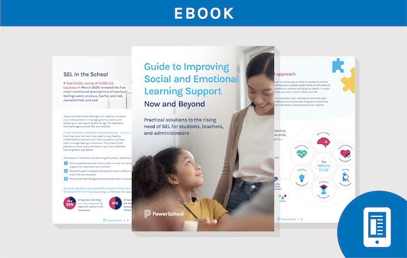
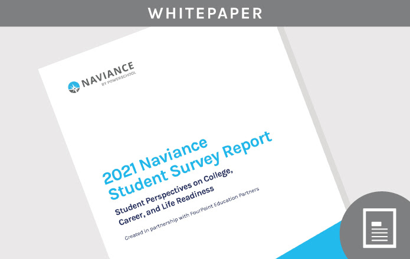
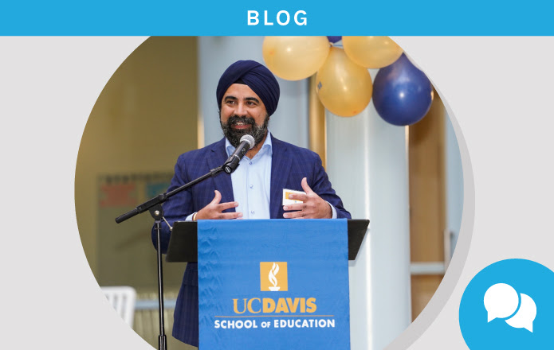
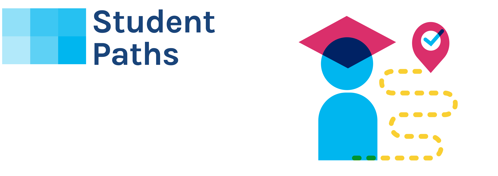

|

|
Guide to Improving Social and Emotional Learning Support
This new eBook takes an in-depth look at SEL fundamentals and ways schools and districts are implementing programs to
address social and emotional concerns at the student, educator, and institutional levels.
GET THE EBOOK
|
Finding Balance: Addressing Today’s Challenges with Lessons Learned from Last School Year
Hear the biggest lessons learned from last year from expert panelists, including Holly Clark from
Infused Classroom,
Darnel Degand from UC Davis; Jean-Claude Brizard from Digital Promise, and Mark Sparvell from Microsoft.
They share best
practices for continuing the use of edtech innovations, supporting educators and students with social
and emotional
learning, and delivering whole-child instruction. Register to watch the webinars on-demand, anytime,
anywhere.
VIEW THE SERIES
|
|

|
New: 2021 Naviance Student Survey Report
Get the results of this year’s survey of over 15,000 students for a revealing look at their perspectives on college,
career, and life readiness—helping you plan to support better student outcomes.
GET THE REPORT
|
|

|
Preparing New Teachers for Long‑Term Career Successt
Learn how the PowerSchool and Microsoft Digital Learning Lab supports tomorrow’s teachers at UC Davis School of
Education. The Lab features state-of-the-art audio-visual equipment and leading education software solutions.
LEARN MORE
|
OUR BIGGEST SALE OF THE YEAR: Professional Services Black Friday Sale!
Do you need Product Tailoring for PowerSchool SIS, eSchoolPlus, eFinancePlus, BusinessPlus, Enrollment, or PowerSchool
Special Programs? Do you need to stock up KTO hours, or consulting or data services hours? If so, now is the best time
of the year to save on Professional Services.
Visit PowerSchool Community and request your hours today. This offer expires 12/31/21. Terms and conditions apply. Get
more details here.
|
|
|
5 Ways Online Enrollment Improves Student Safety
Find out how switching from an outdated paper enrollment process can help securely collect medical records, ensure
accurate contact information, strengthen data security, and more.
GET THE EBOOK
|
|
|
Accelerating Learning Gains through a Comprehensive, Ongoing Approach
Learn how PowerSchool’s interoperable solutions, ongoing professional development, and strategic partnerships can help
you address unfinished learning and accelerate learning gains.
LEARN MORE
|
|
|
Webinar: 4 Steps to a Modernized K‑12 Finance and HR Solution
The Director of Finance at Grain Valley School District discusses ways to simplify processes, untangle workflows,
improve accuracy, and gain valuable data insights with a modern, unified solution.
WATCH NOW
|
|
|
Customer Spotlight: Reducing Contract Stress and Hiring Faster
Find out how Savannah-Chatham County Public Schools completes teacher contracts in just days and with less stress thanks
to digital records.
WATCH THE VIDEO
|
|
|
How a Strong Data Culture Can Support Personalized Learning
Get insights from Jean-Claude Brizard, CEO of Digital Promise, about using data to get a picture of the whole child and
address each student’s needs.
READ BLOG
|
|

|
College Admissions Guide: Improving Best-Fit Outcomes for All Students
This info-packed guide provides tips and insights to help students at each stage of high school to explore, prepare, and
apply to their best-fit college.
GET THE GUIDE
|
|
|
“With PowerSchool Unified Insights, we are finding tremendous value in the ways that data dashboards have empowered our
educators to quickly tend to the individual needs of their students and engage families in the process.”
—Dr. Michael J. Martirano, Superintendent, Howard County Public School System, MD
SEE MORE CUSTOMER STORIES
SHARE YOUR STORY
|
Relive PowerSchool EDGE 2021 on PowerSchool TV!
Listen to PowerSchool customers from around the U.S. discuss the state of K-12 education and how PowerSchool’s unified
solutions help support teacher development, student learning, and operations at their districts.
WATCH ON PSTV
|
PARTNERSHIPS
|
Webinar: How to Connect x2VOL with Your PowerSchool Account for Easy, Online Service Hour Tracking
Learn how x2VOL empowers schools and districts to manage student service, access data insights, and engage students in
meaningful growth in one easy-to-use platform. The single sign-on partnership with PowerSchool makes accessing x2VOL
easier than ever.
REGISTER NOW
|
|
PowerSchool's One-Stop Shop for School Payments
Easily accept school payments online using Vanco Education's PowerSchool integrations. Vanco simplifies payments for
district staff and families with a one-stop shop for any school payment: from assigning registration fees to specific
students to collecting spirit wear payments or adding money to a lunch account balance. Learn how 1,200+ districts
across the U.S. have saved time with Vanco's RevTrak Web Store.
LEARN MORE
Learn more about PowerSchool's Partner Program.
|
CUSTOMER EDUCATION
Have You Registered for PSU?
REGISTER TODAY
Find out what else is new in Customer Education by visiting our blog on PowerSchool Community.
|
WEBINARS
Strategies to Simplify Teaching & Learning with PowerSchool
Monday, November 15
Join us as we discuss how teachers can simplify teaching and learning with classroom management tools and why early
implementation is essential.
REGISTER
Finding Balance Series Part 1: Assessing and Teaching with the Whole Child Top-of-Mind
Hear from industry expert panelists on using data to assess the whole child, providing personalized learning through
analysis of data, and looking at holistic data.
WATCH NOW
Finding Balance Series Part 2: Lessons Learned from the Evolution of Edtech Innovation in 2020
Gain insights from K-12 thought leaders and representatives from schools and districts—with examples of how data has
driven strong decision-making, and how we can work toward tech equity to support students.
WATCH NOW
Supporting Teachers with 24/7, Personalized Professional Learning
We discuss tools one K-12 district uses to train more teachers and staff more easily. Find out how to deliver
high-quality, personalized learning content and move beyond the idea of checking compliance boxes.
WATCH NOW
Student Perspectives on College, Career, and Life Readiness
A discussion of key findings from the 2021 Naviance Student Survey. Attendees will learn about trends in student
preferences and how to best support students’ college and career readiness.
WATCH NOW
How Educators are Solving Unique Challenges by Bringing Data Together
Learn how districts have built highly customized data dashboards to gain a holistic view, improve flexibility and
adaptability in decision-making, and more.
WATCH NOW
|
EVENTS
Join us at the 2021 CITE Annual Conference—Nov. 16 & 17, Sacramento
Visit our booth (#101) for resources on how PowerSchool can support the entire educational ecosystem for California
schools and districts. Also, hear from California educators and thought leaders as they share success stories and
lessons learned in our sessions. Click on the link below to see the agenda.
SEE THE SCHEDULE
Look for PowerSchool at these upcoming industry events. Also, be sure to check out our Events page to keep up with where
the PowerSchool team is for the remainder of the year.
|
|
|